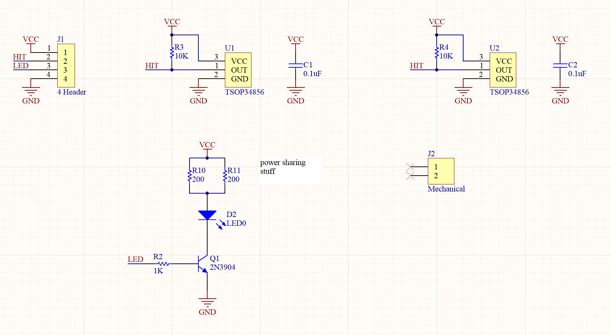
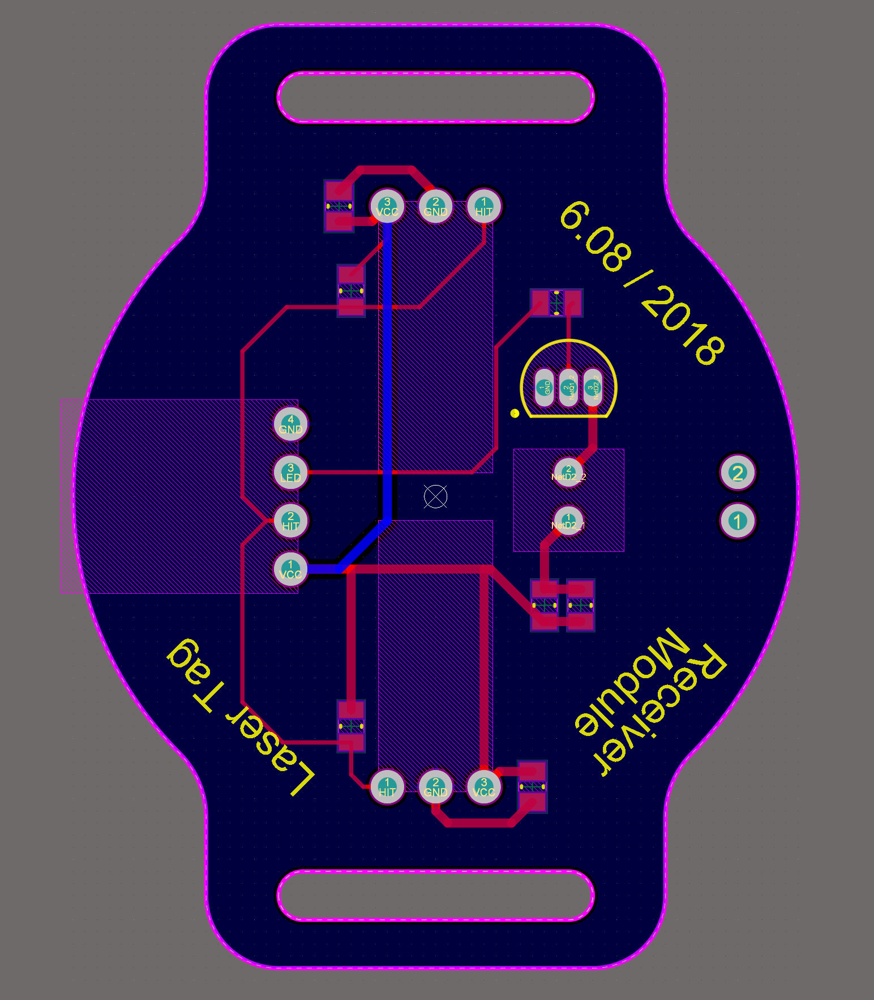
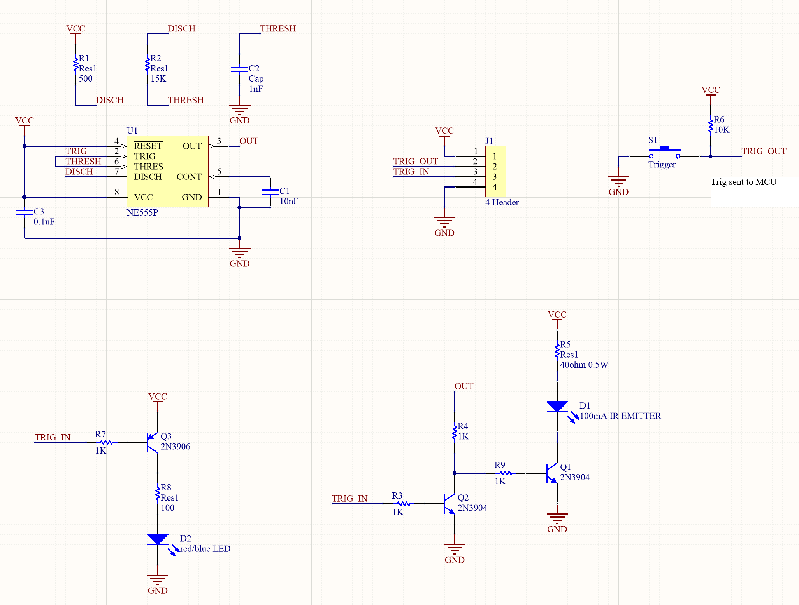
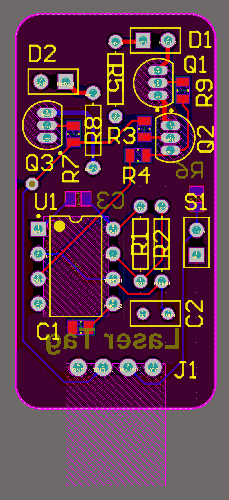
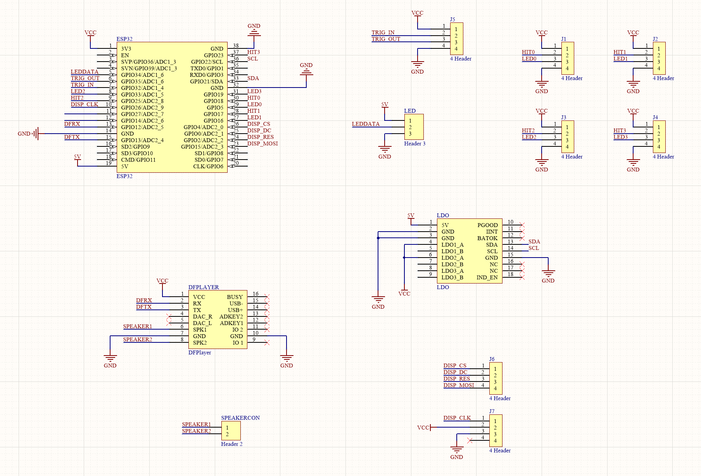
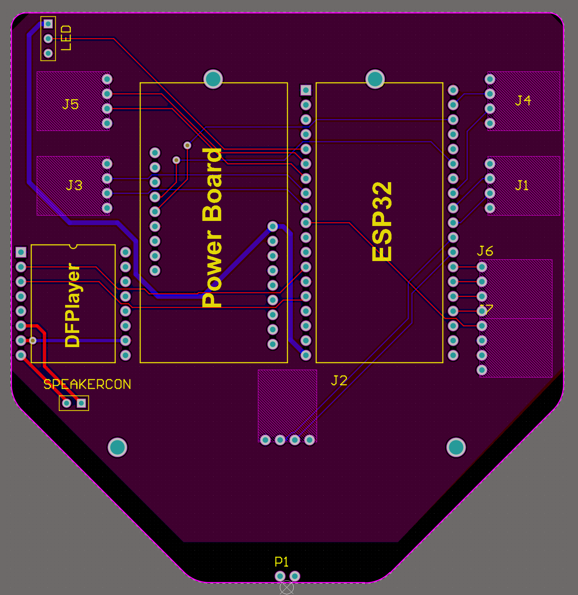
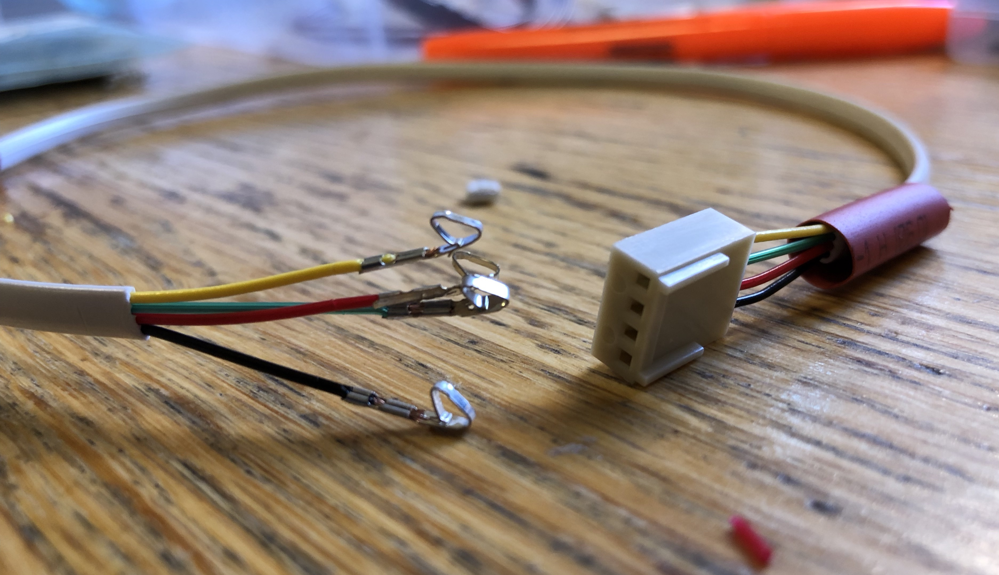
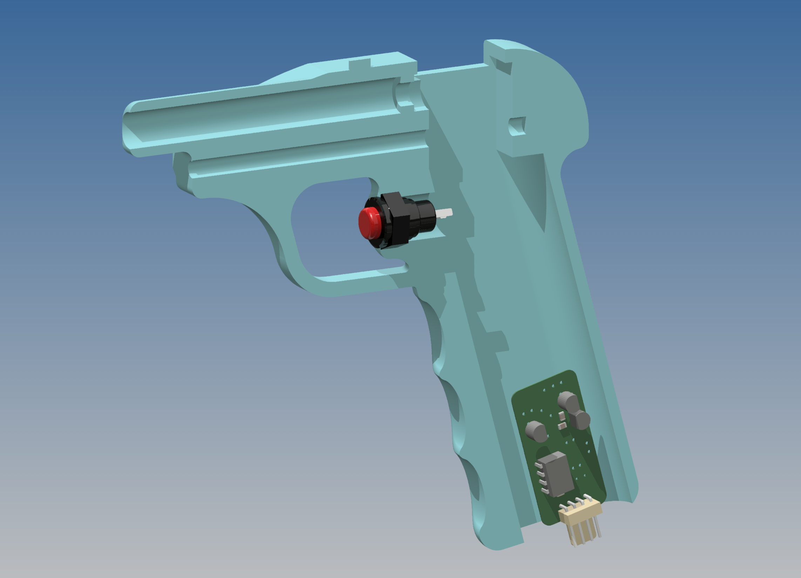
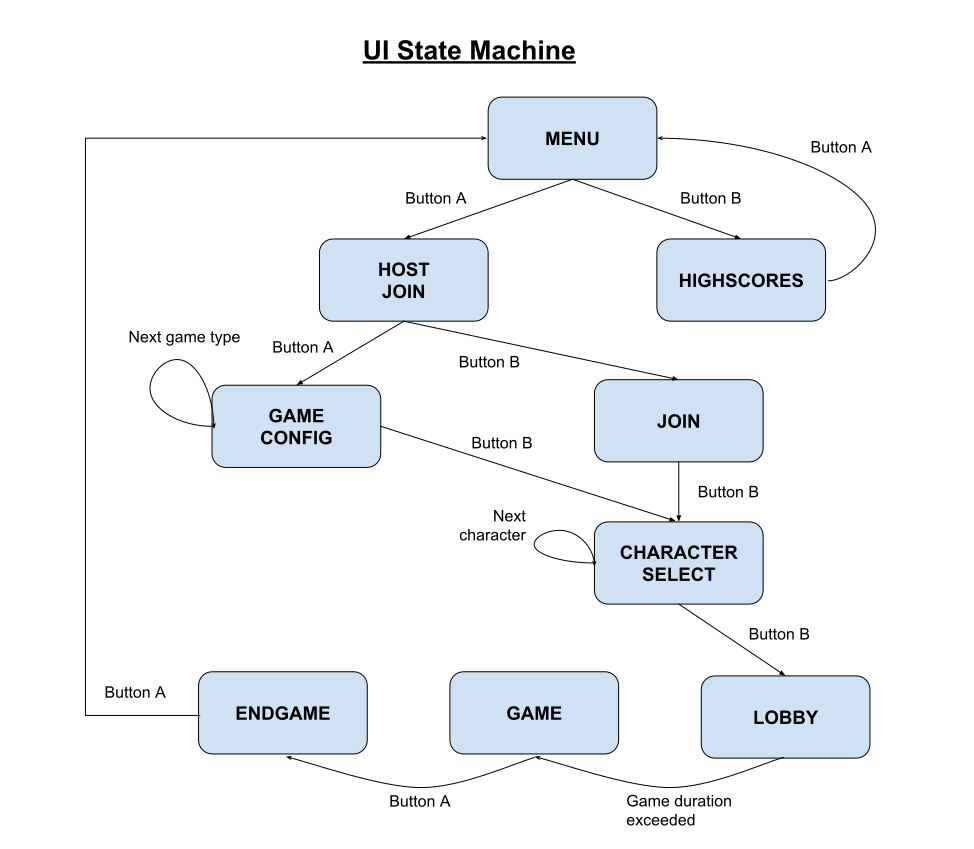

# Hardware
Three different custom printed circuit boards (PCBs) were designed, and several of each type
was subsequently ordered from a Chinese fabricator. The three types of boards are a receiver
module, an emitter module, and a master board that connects to several receiver modules and
one emitter module.
Files for the gerbers sent to the fab and the source Altium projects they were generated
from are available in the downloads section below.
### Receiver module
The receiver modules have IR receivers that are activated when IR at a specific frequency (~56kHz)
hits them. Up to four receiver modules per player are supported - two on the arms, one soldered
directly to master board on the chest, and one on the back. Using this layout, it is possible for
a player to get hit from many angles.
|
---|---
Receiver board schematic | Receiver board PCB layout
The receivers use a TSOP34856 IC, which is usually used in remote control applications. The only
external components it needs is a pullup resistor and bypass cap. It's possible to mount two
TSOP34856 ICs for a wider range of hit detection angles, but we only populated one per board.
The receiver modules also have
a very bright (when viewed directly) LED in the color of the player's team, which is switched
by the ESP32 through a BJT transistor.
### Emitter module
The emitter module is contained within the grip of the laser gun. The module produces IR pulses
tuned to the specific frequency the receivers accept. The module has an input and ouput trigger
data line to the ESP32 on the master board. The output trigger line directly connects the physical
trigger button on the laser gun to the ESP32. The input trigger line is used to start and stop emitting
IR pulses. Having the physical trigger signal and IR pulse signal be separate allows us to implement
features such as cooldown and ammo limiting.
|
---|---
Emitter board schematic | Emitter board PCB layout
The circuit driving the IR emitter is a 555 timer. Viewed on a scope, the frequency generated is 54kHz.
The output of the 555 timer is amplified with a BJT transistor to drive the emitter at around 50mA
(the LED is rated for up to 100mA). The input trigger line coming from the ESP32 is used to pull the base
of the BJT to ground in order to toggle IR pulses.
### Master board
The master board serves as a centralized place to mount boards (ESP32, power board, DFPlayer)
and distribute power/signals.
|
---|---
Master board schematic | Master board PCB layout
### Connectors/Cables
Cables were cut to length, stripped, crimped, and heat shrunk
|<img src="media/cables2.jpg">
---|---
Crimps | Connectivity between boards
### Laser Gun
The laser gun was modeled in Autodesk Inventor and designed so that it could be fitted with the IR
emitter LED inside the barrel and the driving circuitry in the handle.
Cutaway rendering of the assembly:

### Hardware Challenges
Unsurpisingly, there were a few small mistakes in the PCB designs.
- Attempting to use an input-only pin on the ESP32 as the IR emitter enable pin, solved by swapping two wires in
the cable.
- Not using the same OLED pin mapping that we used on the breadboard, solved by changing the OLED to use software serial
- PNP transistor used to control a visual LED on the laser gun didn't work, so we just didn't use visual light LEDs on
the laser gun.
# Software
## ESP32
### API definitions:
- screen.h
```
void drawStrAt(SCREEN &dis, const char *str, ScreenPos pos, u8g2_uint_t x = 0, u8g2_uint_t y = 0);
```
The `drawStrAt` is used throughout the code to draw to the OLED. It takes a string to print
and use a `ScreenPos` bitfield to set the location.
### State Machine
<center>

</center>
## Server
Game managment and play happen entirely on the server. Through GET requests, users will be able
to see information about ongoing and previous games, such as all the actions that take place
(whether a person fired their gun or was hit), all the players currently in a game, all active games
taking place, and the overall highscores from all the games that have occurred. POST requests
handle changes to games, which consists of submitting actions that occured and hosting and joining games.
## Software Challenges
Determining a way to end time-based games was a struggle. Originally we wanted to implement a
server that had web-socket capabilities so we would be able to long-pull from the ESP32 to
determing when a game should end. This proved to be a bigger obstacle than we anticipated, so we
decided to have the end time determined by when the host created a game, and whenever a player joins
that game through a POST request, it returns the time left in the game. This way, there is no need
for any kind of "syncronization" of clocks multiple times.
# Energy Management
lol
# Parts List
Part | PN | Purpose
-----|-------|--------
Male connector header | [S9490-ND](https://www.digikey.com/products/en?keywords=S9490-ND) | Universal connector on PCBs
Female connector housing | [S9437-ND](https://www.digikey.com/products/en?keywords=S9437-ND) | Mating connector on cables
Connector crimps | [S9473CT-ND](https://www.digikey.com/products/en?keywords=S9473CT-ND) | Crimps for cables
Resistor 10K | [RMCF0805JT10K0CT-ND](https://www.digikey.com/product-detail/en/stackpole-electronics-inc/RMCF0805JT10K0/RMCF0805JT10K0CT-ND/1942577) | Pullup resistors
Resistor 1K | [RMCF0805JT1K00CT-ND](https://www.digikey.com/product-detail/en/stackpole-electronics-inc/RMCF0805JT1K00/RMCF0805JT1K00CT-ND/1942557) | BJT base resistors
Capacitor 0.1uF | [1276-2448-1-ND](https://www.digikey.com/product-detail/en/samsung-electro-mechanics/CL21B104KOANNNC/1276-2448-1-ND/3890534) | IC bypass caps
Resistor 160 ohm | [RMCF0805JT160RCT-ND](https://www.digikey.com/product-detail/en/stackpole-electronics-inc/RMCF0805JT160R/RMCF0805JT160RCT-ND/5049817) | LED current limiting
Capacitor 10nF | [1276-1078-1-ND](https://www.digikey.com/product-detail/en/samsung-electro-mechanics/CL21B103KBCNNNC/1276-1078-1-ND/3889164) | 555 timer control voltage
Transistor PNP | [2N3904FS-ND](https://www.digikey.com/product-detail/en/on-semiconductor/2N3904BU/2N3904FS-ND/1413) | Switching LEDs
Bright blue LED | [C503B-BAS-CZ0A0451-ND](https://www.digikey.com/product-detail/en/cree-inc/C503B-BAS-CZ0A0451/C503B-BAS-CZ0A0451-ND/2341538) | LEDs for blue team
Bright red LED | [C503B-RAS-CA0C0AA1-ND](https://www.digikey.com/product-detail/en/cree-inc/C503B-RAS-CA0C0AA1/C503B-RAS-CA0C0AA1-ND/6561759) | LEDs for red team
Flat 4 conductor cable | [CN263-100-ND](https://www.digikey.com/product-detail/en/cnc-tech/530-26-04-WH-0100F/CN263-100-ND/3442477) | For making cables
IR receiver | [TSOP34856-ND](https://www.digikey.com/products/en?keywords=TSOP34856) | 56kHz receiver
IR emitter | [751-1203-ND](https://www.digikey.com/products/en?keywords=751-1203-ND) | 100mA LED emitter
LM555 timer IC | - | 56kHz square wave generation
Resistor 500 ohm | - | 555 timer configuration
Resistor 13K | - | 555 timer configuration
Resistor 68 ohm | - | IR LED current limiting
DFPlayer Mini | [DFPlayer Mini](https://www.dfrobot.com/wiki/index.php/DFPlayer_Mini_SKU:DFR0299) | Speaker amplifier
3W 8ohm speaker | - | speakers
# Downloads
- [Receiver module PCB gerbers](downloads/receiver_gerber.zip)
- [Emitter module PCB gerbers](downloads/emitter_gerber.zip)
- [Master board PCB gerbers](downloads/masterboard_gerber.zip)